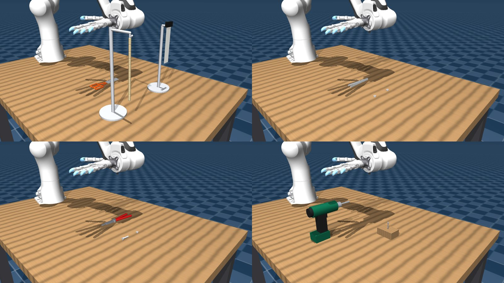
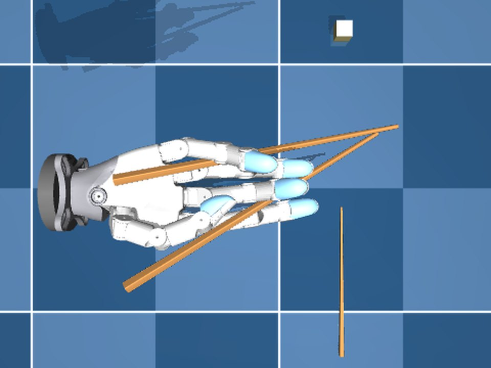
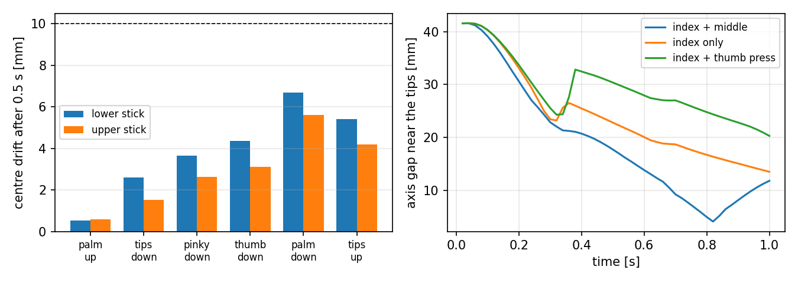
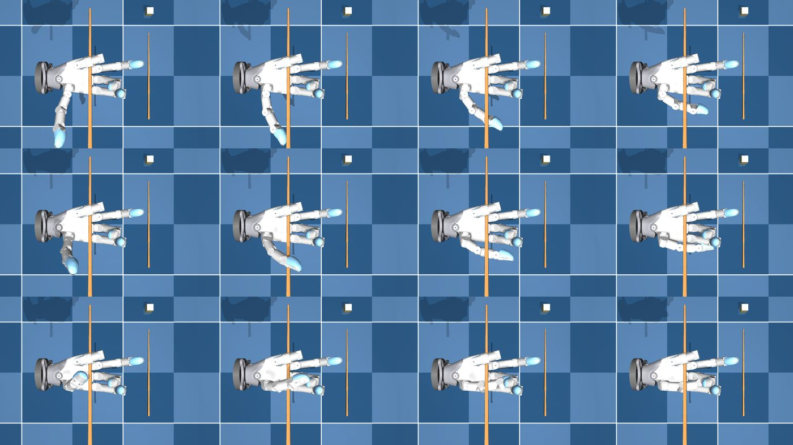
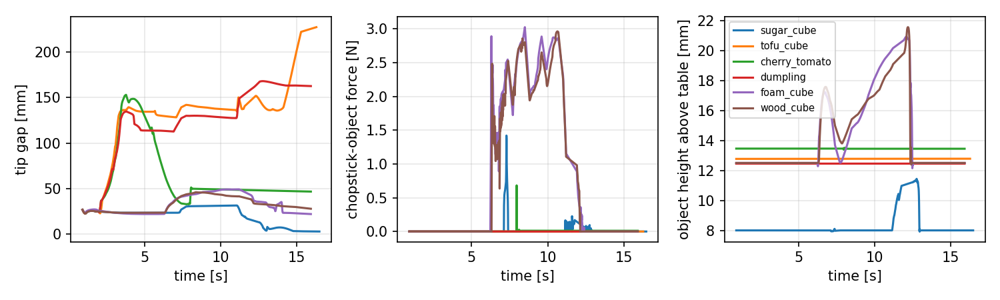
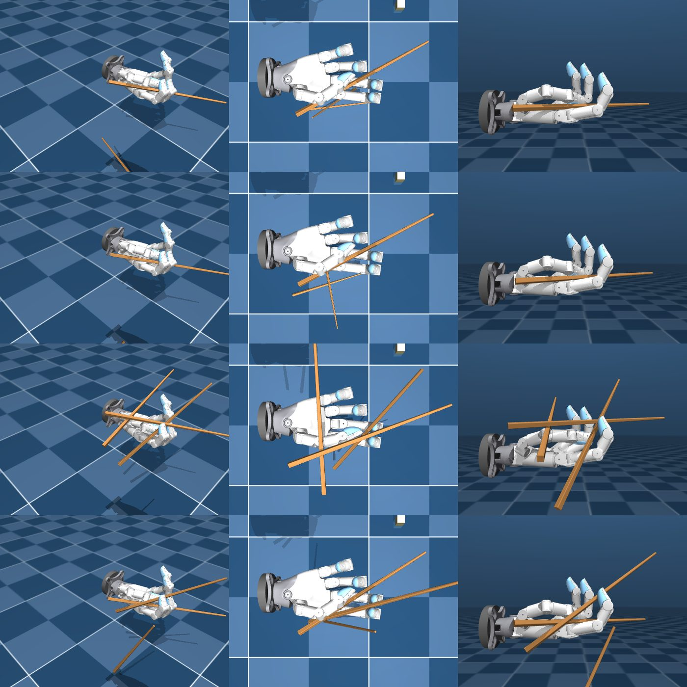
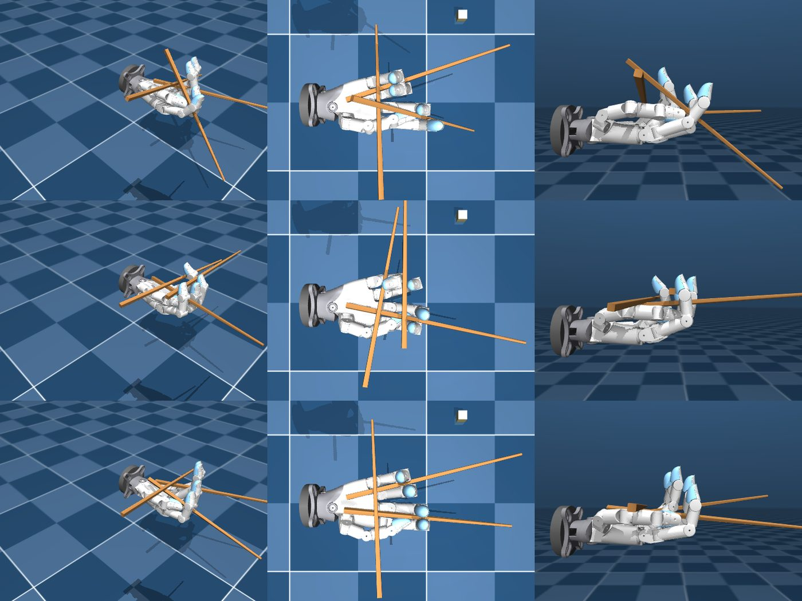
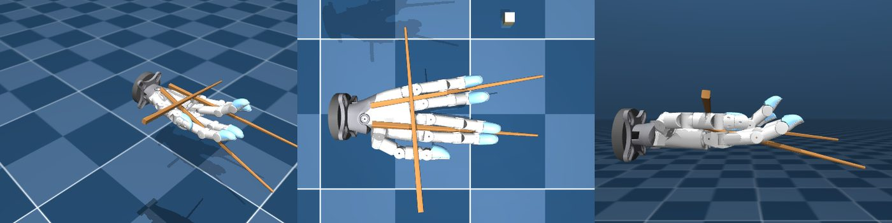

Dexterous manipulation ◆ Tool use ◆ Contact & force ◆ Reinforcement learning ◆ Ongoing ◆ 2026
Contact-aware, force-aware tool use for a dexterous hand, chopsticks first. A 20-DoF WUJI Hand 2 on a Franka Panda holds two loose chopsticks in MuJoCo; the page records how the holding pose was found, what the hand's geometry allows and forbids, the pick-up attempt with a human-style wrist twist, and the learning plan: torque sensing and force feedback as observations for RL, visual RL after that, then sim-to-real. Target: IROS 2027.
The fingers take two free 240 mm chopsticks, the hand is flipped through six gravity directions (palm up, tips down, little-finger down, thumb down, palm down, tips up), then index and middle swing the upper stick onto the lower one and reopen. Nothing is welded or strapped: contact and friction only. Simulation footage, 30 fps.
Five scenes with realistic objects: chopsticks over a place setting (plate with tofu, dumpling, cherry tomato, peanut; sugar, pine and foam cubes; rice bowl), scissors cutting a rope and a card, tweezers and nuts, pliers and a bolt, a cordless drill driving a screw. The hand model is converted from the official WUJI description with convex-hull and CoACD collision geometry; the sticky chopsticks own their contact parameters through MuJoCo's geom priority; every object's mass and friction is stated in the PDF. Tool physics is validated on mocap benches; the hand operates the chopsticks.

The upper stick is sandwiched between the index and middle fingers, resting on the middle finger's side, with the thumb's proximal phalanx lying on its rear end. The index and middle fingers flex at the MCP to swing it; the lower stick is clamped between the ring and little fingers and does not move. Each stick is clamped near its midpoint, so gravity produces no pitch torque about the clamp. This is the robot analogue of the Dangling Stick and Forsaken Pinky grips in the Marcosticks taxonomy, the two human mechanisms that do not need a thumb web.
| digit | role | measured |
|---|---|---|
| index | swings the upper stick (MCP flexion, PIP at half rate); its abduction steers the tip sideways | alone: 42 → 13.5 mm |
| middle | the upper stick rests on its side; flexing with the index | with index: 42 → 4.1 mm |
| thumb | lies on the upper stick's rear end and holds it | pressing opens: 42 → 20 mm |
| ring + little | clamp the lower stick, static | moves 1.0 mm during the pinch |
Contact forces at rest: 8.5 N on the lower stick, 4.1 N on the upper. Hand actuator gains are the upstream placeholders scaled ×3 on abduction and ×1.5 on flexion (config.HAND_GAIN_SCALE); with the upstream values the 0.2 N·m abduction servos cannot clamp a stick against the arm's accelerations.


Measured from the hand's convex collision hulls in the palm frame (palm_center: x along the fingers, y towards the little finger, z out of the palm; mm). Three facts rule out the textbook standard grip on this hand.
The thumb metacarpal lies on the radial edge of the palm 4–35 mm proud of it (x −14..31, y −53..−26). The purlicue that anchors the lower stick in a human hand is solid robot. Every attempt to pass a stick along the thumb side at z < 30 behind x = 31 collided with it.
With MCP ≥ 0.8 rad and PIP ≥ 1.0 rad the middle phalanx stands as a wall in front of the pad, so a stick under the fingertip pad cannot continue forward past the finger. Pads face the palm only when the loop is closed. This is why the index pad cannot press a forward-running stick from above.
Index y −43..−23, middle −19..−2, ring 0..20, little 17..39 (extended), at z −21..−3, below the palm_center plane; the palm shell top is at z 9. A stick between two fingers is free to yaw, so it aligns with its finger pair; two parallel pairs give parallel sticks 40 mm apart.

Human chopstick use is not one grip. Yang, Yin and Liu (SIGGRAPH 2022) learn chopstick skills for many holding styles found by Bayesian optimisation over a physics check; the Marcosticks taxonomy classifies more than forty grips by which fingers hold the top and the bottom stick in the open and closed postures; Choji and Saito (2024) show with motion capture that lower-stick stability separates skilled from unskilled users. In the standard grip the lower stick is fixed in the thumb web and on the ring finger, and the upper stick is held like a pencil by the thumb, index and middle pads and moved by index and middle flexion. The whole lateral family rests both rear ends on the purlicue. The Dangling Stick grip sandwiches the top stick between the hooked index and middle fingers and lets the MCP knuckles do the work; the Forsaken Pinky grip gives the bottom stick to the ulnar side of the hand. The robot combines the last two, because they are the ones that need no purlicue. The tripod the standard grip asks for (index pad on top, middle finger resting under, thumb pressing from the side) was also attempted by construction (row 7); facts 1 and 2 above are why it did not pass the geometric stage.
A pose is the 20 joint angles \(q\) plus one line per stick in the palm frame, each through two points at fixed stations along the fingers, \(\mathbf p_0=(X_0,y_0,z_0)\), \(\mathbf p_1=(X_1,y_1,z_1)\) with \(X_0 = 90\) mm (clamp) and \(X_1 = 210\) mm (near the tips):
so the stick centre \(\mathbf c\) has its thick end \(B\) behind \(\mathbf p_0\) and the clamp sits near the midpoint. The world orientation is \(R_w=[R\mathbf d,\ \mathbf y,\ \mathbf z]\) with \(\mathbf y=\mathbf n\times R\mathbf d\) normalised and \(\mathbf z=R\mathbf d\times\mathbf y\) (\(R,\mathbf n\): palm rotation and normal). 28 parameters, sampled uniformly in a box subject to: each pair squeezes (index minus middle abduction ≥ 0.12 rad, ring minus little ≥ 0.12), the lines meet within 30°, the extrapolated tip separation is 10–40 mm, and the upper tip starts below the lower one.
The clamping joints are backed off (thumb abduction −0.3 rad, index and ring −0.3, middle and little +0.3), each stick is teleported onto its line and lifted along the palm normal in 1 mm steps until no hull is penetrated by more than 0.5 mm, and the targets ramp to the grip posture over 0.4 s. The sample is kept only if the lower stick touches two links of the ring/little pair and none of the index or middle, and the upper stick touches an index and a middle link.
With gravity set in turn to the six directions, the hand settles 0.5 s each and the drift of each stick centre is measured; a pose is feasible if \(\delta_k=\max(\lVert\mathbf c_L-\mathbf c_L^0\rVert,\lVert\mathbf c_U-\mathbf c_U^0\rVert)\le 10\) mm for the four orientations the pick-up passes through. The pinch is closed loop: every 20 ms the error \(\mathbf e\) from the upper tip to the closest point of the lower stick's axis (restricted to its last 50 mm, so an offset along the sticks does not count) is expressed in the palm frame; the index and middle MCP targets integrate \(e_z\) (closing along the swing arc), their common abduction integrates \(e_y\) (steering sideways), with gain \(k/0.17\) rad per metre from the 170 mm lever between the MCP and the tip. The score is
with \(g^{*}\) the minimum axis gap reached, \(\Lambda\) the lower stick's motion, \(g_0\) and \(g_{\rm re}\) the open and reopened gaps.
A stick between two finger sides aligns with its pair. With pair axes converging by \(\alpha\) and clamp stations \(\Delta y\) apart at \(x_c\) the sticks meet at
placed at the tips (\(x\approx 200\) mm) by \(\alpha\approx 0.4\) rad; the index/middle pair is abducted towards the ring and the ring/little pair towards the middle.
The grip is reused unchanged in the arm scene. The palm rotation is the Kabsch fit that sends the mean stick direction to the world direction \((\cos 60^\circ,0,-\sin 60^\circ)\) (tips down and forward) and the palm normal to world \(+y\) (palm facing the side), solved by the Panda's grid-seeded bounded least-squares IK with the pinch point 60 mm above the object; the arm descends until the pinch point is 3 mm below the object centre, with the lowest tip kept 2 mm above the object's support, and corrects the pinch point three times in closed loop on the commanded palm pose (the position servos sag 5–8 mm); the pinch runs until the gap stops shrinking; then \(R_k=R_x(k\pi/80)\,R_0\) for \(k=1..40\) rotates the palm about the world \(x\) axis (the forearm) while rising 30 mm, each step solved by damped least squares from the previous one: the hand supinates from palm-sideways to palm-up and the tips swing the object up, as a person turns the wrist.

| object | IK margin [rad] | gap after approach [mm] | pinch-point error [mm] | gap open [mm] | gap closed [mm] | contacts | force [N] | rise [mm] |
|---|---|---|---|---|---|---|---|---|
| sugar cube | 0.62 | 24 | 2.3 | 32 | 13 | 2 | 0.05 | 0 |
| tofu cube | 0.78 | 134 | 0.1 | 136 | 152 | 0 | 0 | 0 |
| cherry tomato | 0.59 | 114 | 92 | 49 | 48 | 1 | 0.01 | 0 |
| dumpling | 0.66 | 114 | 0.6 | 128 | 158 | 0 | 0 | 0 |
| foam die | 0.81 | 22 | 8.4 | 49 | 43 | 1 | 0.89 | 0 |
| pine cube | 0.72 | 24 | 8.3 | 42 | 39 | 2 | 0.98 | 0 |
← swipe the table →
The between-fingers clamp holds each stick with two side contacts. Under the arm's motion the sticks' relative geometry changes (open gap 15 mm in the hand, 32–49 mm after the approach) and on the longer reach one stick leaves its clamp. A human fixes this with the purlicue and the thumb pad; this hand has neither, so the learned policy will have to regulate the clamp forces from contact and torque feedback, which is the point of the project.
The controller drives the upper tip onto the lower stick's axis. With an object between them it stalls as soon as one stick touches, because the measured gap stops shrinking. A force-aware controller (or policy) would keep closing until both contacts carry load.
| # | attempt | outcome | why |
|---|---|---|---|
| 1 | Hinged training pair strapped to the hand (weld); index and middle close the tips; arm pick-up | 6/6 lifted, 71–75 mm | Rejected: not two free sticks. |
| 2 | Random 28-D search, sticks along the fingers, strict insertion into the static posture | 0/3400 feasible | The feasible set is a thin shell; random samples start inside links or float. |
| 3 | Constructed standard grip: lower stick under the thumb's proximal phalanx on the index knuckle, upper on the thumb under the index pad | no clearance / stick falls | Nothing supports a stick outboard of the palm; the metacarpal blocks it behind x = 31 mm (fact 1). |
| 4 | Lateral finger-pair clamps behind the stick midpoint, insert-and-close search | 22/80 hold in all six directions, tips 90–280 mm apart | Tip-heavy sticks pitch about the clamp and dangle through the palm plane. |
| 5 | Clamps at the midpoint, fingers nearly straight, sticks parallel to the palm above the shell | holds (drift 6–8 mm), tips 88–108 mm apart, pinch does nothing | Each stick yaws to its finger pair; parallel pairs give parallel sticks (fact 3). |
| 6 | As 5 with converging pairs, settled tip order enforced, closed-loop pinch, axis-gap metric | holds, 42 → 4 mm | The grip used above. |
| 7 | Constructed tripod (index pad on top, middle resting under, thumb pressing): stick lines from the ring and index fingertips and a web point on the palm edge; thumb, index and middle swept until they touch the upper stick | 0 passed the geometric stage over four parametrisations | The curled ring fingertip sits behind the web point; the index pad never reaches a stick that passes the palm edge (facts 1 and 2). |
| 8 | Grip 6 with the lower stick below the upper one so a thumb press closes | best 24 → 9 mm, worse than 6 | On this hand the thumb's press translates the upper stick instead of levering its tip. |
← swipe the table →



Observations: joint torques (the WUJI actuators report current), fingertip contact normals and forces, the sticks' pose relative to the palm. Reward: object height with a penalty on clamp-force variance and on stick slip in the hand. The scripted pipeline above is the reset and the baseline; the between-fingers hold is the initial state distribution.
Replace the privileged stick and object state with a wrist camera, keep the torque and contact channels; domain-randomise friction (the chopstick class is 1.5, foods 0.5–0.9), masses and the hand gains, which are placeholders until WUJI system identification. Training stack: MJLab or Isaac Sim, decided by time.
The scissors, tweezers, pliers and drill scenes are validated on mocap benches (cutting is a geometric rule on rigid chains; the screw advances on a helical coupling). Grasping and operating them with the hand is next, with the same contact and force observations.
Clamp-force regulation from torque feedback during arm motion; a pinch controller that closes until both sticks carry load; the tripod grip if a soft fingertip pad model (the Beta 2 pads are rigid hulls here) makes the index pad reach.
Every number on this page is printed by one of these scripts; the PDF holds the derivations, the parameter tables and the other experiments (static settling, in-hand retention through a wrist roll, the mocap pinch bench, the tool benches).
Solo project, started October 2026, towards an IROS 2027 submission on contact-aware, force-aware tool use for dexterous hands. Hand: WUJI Hand 2 (wuji-technology, Beta 2 release 2026.9.11). Arm: Franka Panda from MuJoCo Menagerie. Built with Claude Code.
Z. Yang, K. Yin, L. Liu, Learning to Use Chopsticks in Diverse Gripping Styles, SIGGRAPH 2022 · Y. Choji, K. Saito, Motion capture-based evaluation of lower chopstick stability, J. Phys. Ther. Sci. 36(9), 2024 · Marcosticks: grip taxonomy, lateral family, Dangling Stick, Forsaken Pinky.